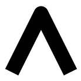

Styling Visual Attributes¶
Using Palettes¶
Palettes are sequences (lists or tuples) of RGB(A) hex strings that define a
colormap and be can set as the color attribute of many plot objects from
bokeh.plotting. Bokeh offers many of the standard Brewer palettes, which
can be imported from the bokeh.palettes module. For example, importing
“Spectral6” gives a six element list of RGB(A) hex strings from the Brewer
“Spectral” colormap.
>>> from bokeh.palettes import Spectral6
>>> Spectral6
['#3288bd', '#99d594', '#e6f598', '#fee08b', '#fc8d59', '#d53e4f']
All of the standard palettes included in bokeh can be found at bokeh.palettes. Custom palettes can be made by creating sequences of RGB(A) hex strings.
Visual Properties¶
In order to style the visual attributes of Bokeh plots, you first must know what the available properties are. The full Reference Guide will list all the properties of every object individually, though there are three broad groups of properties that show up often. They are:
- line properties line color, width, etc.
- fill properties fill color, alpha, etc.
- text properties font styles, colors, etc.
Below is more detail about each of these.
Line Properties¶
line_color- color to use to stroke lines with
line_width- line stroke width in units of pixels
line_alpha- floating point between 0 (transparent) and 1 (opaque)
line_joinhow path segments should be joined together
'miter'
'round''bevel'
line_caphow path segments should be terminated
'butt'
'round'
'square'
line_dasha line style to use
'solid''dashed''dotted''dotdash''dashdot'- an array of integer pixel distances that describe the on-off pattern of dashing to use
- a string of spaced integers matching the regular expression ‘^(\d+(\s+\d+)*)?$’ that describe the on-off pattern of dashing to use
line_dash_offset- the distance in pixels into the
line_dashthat the pattern should start from
{kind=link}
Fill Properties¶
fill_color- color to use to fill paths with
fill_alpha- floating point between 0 (transparent) and 1 (opaque)
Text Properties¶
text_font- font name, e.g.,
'times','helvetica' text_font_size- font size in px, em, or pt, e.g.,
'12pt','1.5em' text_font_stylefont style to use
'normal'normal text'italic'italic text'bold'bold text
text_color- color to use to render text with
text_alpha- floating point between 0 (transparent) and 1 (opaque)
text_align- horizontal anchor point for text:
'left','right','center' text_baselinevertical anchor point for text
'top''middle''bottom''alphabetic''hanging'
Note
There is currently only support for filling text. An interface to stroke the outlines of text has not yet been exposed.
Visible property¶
Glyph renderers, axes, grids, and annotations all have a visible property that can be used to turn them on and off.
from bokeh.io import output_file, show
from bokeh.plotting import figure
# We set-up a standard figure with two lines
p = figure(plot_width=500, plot_height=200, tools='')
visible_line = p.line([1, 2, 3], [1, 2, 1], line_color="blue")
invisible_line = p.line([1, 2, 3], [2, 1, 2], line_color="pink")
# We hide the xaxis, the xgrid lines, and the pink line
invisible_line.visible = False
p.xaxis.visible = False
p.xgrid.visible = False
output_file("styling_visible_property.html")
show(p)
This can be particularly useful in interactive examples with bokeh server or CustomJS.
from bokeh.io import output_file, show
from bokeh.plotting import figure
from bokeh.layouts import layout
from bokeh.models import Toggle, BoxAnnotation, CustomJS
# We set-up the same standard figure with two lines and now a box over top
p = figure(plot_width=600, plot_height=200, tools='')
visible_line = p.line([1, 2, 3], [1, 2, 1], line_color="blue")
invisible_line = p.line([1, 2, 3], [2, 1, 2], line_color="pink")
box = BoxAnnotation(left=1.5, right=2.5, fill_color='green', fill_alpha=0.1)
p.add_layout(box)
# We write coffeescript to link toggle with visible property of box and line
code = '''\
object.visible = toggle.active
'''
callback1 = CustomJS.from_coffeescript(code=code, args={})
toggle1 = Toggle(label="Green Box", button_type="success", callback=callback1)
callback1.args = {'toggle': toggle1, 'object': box}
callback2 = CustomJS.from_coffeescript(code=code, args={})
toggle2 = Toggle(label="Pink Line", button_type="success", callback=callback2)
callback2.args = {'toggle': toggle2, 'object': invisible_line}
output_file("styling_visible_annotation_with_interaction.html")
show(layout([p], [toggle1, toggle2]))
Specifying Colors¶
Colors properties are used in many places in Bokeh, to specify the colors to use for lines, fills or text. Color values can be provided in any of the following ways:
- any of the 147 named CSS colors, e.g
'green','indigo' - an RGB(A) hex value, e.g.,
'#FF0000','#44444444' - a 3-tuple of integers (r,g,b) between 0 and 255
- a 4-tuple of (r,g,b,a) where r, g, b are integers between 0 and 255 and a is a floating point value between 0 and 1
Warning
Supplying lists of RGB or RGBA color tuples as color arguments (either directly or as a DataSource column reference) doesn’t work. You may read a discussion of the issue on our project GitHub page. Suggested work-arounds include using lists of:
- RGB hexadecimal values
- bokeh.colors.RGB objects (i.e.
[RGB(255, 0, 0), RGB(0, 255, 0)"]) - CSS-format RGB/RGBA strings (i.e.
["rgb(255, 0, 0)", "rgb(0, 255, 0)"])
Color alpha can be specified in multiple ways for the visual properties. This
can be by specifying the alpha directly with line|fill_alpha, or by
providing the alpha through the RGBA 4-tuple for the line|fill_color.
Additionally, there is also the freedom to use a combination of the two, or no alpha at all. The following figure demonstrates each possible combination of the inputs for line and fill alphas:
Note
If using the bokeh.plotting interface, another option is to specify
color and/or alpha as a keyword, as well as the demonstrated color
properties. These inputs work by applying the provided value to both of the
corresponding line and fill properties. However, you can still
provide fill|line_alpha or fill|line_color in combination with
the color/alpha keywords, and the former will take precedence.
Styling Arrow Annotations¶
There are several ArrowHead subtypes that can be applied to Arrow annotations. Setting the start or end property to None will cause no arrow head to be applied at the specified arrow end. Double-sided arrows can be created by setting both start and end styles. Setting visible to false on an arrow will also make the corresponding arrow head invisible.
Screen Units and Data-space Units¶
Screen units use raw numbers of pixels to specify height or width, while data-space units are relative to the data and the axes of the plot. For example, in a 400 pixel by 400 pixel graph with x and y axes ranging from 0 through 10, a glyph one fifth as wide and tall as the graph would be 80 screen units or 2 data-space units.
Selecting Plot Objects¶
As described in Defining Key Concepts, Bokeh plots comprise graphs of
objects that represent all the different parts of the plot: grids, axes,
glyphs, etc. In order to style Bokeh plots, it is necessary to first find
the right object, then set its various attributes. Some objects have
convenience methods to help find the objects of interest (see Axes,
Grids, and Legends). But there is also a select() method on Plot
that can be used to query for Bokeh plot objects more generally.
For example, you can query for objects by type. The following snippet returns all the PanTool objects a plot has:
>>> p.select(type=PanTool)
[<bokeh.models.tools.PanTool at 0x106608b90>]
The select() method can query on other attributes as well:
>>> p.circle(0, 0, name="mycircle")
<bokeh.plotting.Figure at 0x106608810>
>>> p.select(name="mycircle")
[<bokeh.models.renderers.GlyphRenderer at 0x106a4c810>]
This sort of query can be especially useful for styling visual attributes of Glyphs.
Plots¶
Plot objects themselves have many visual characteristics that can be styled:
the dimensions of the plot, backgrounds, borders, outlines, etc. This section
describes how to change these attributes of a Bokeh plot. The example code
primarily uses the bokeh.plotting interface to create plots, however the
instructions apply regardless of how a Bokeh plot was created.
Dimensions¶
The dimensions (width and height) of a Plot are controlled by plot_width
and plot_height attributes. These values are in screen units, and they
control the size of the entire canvas area, including any axes or titles (but
not the toolbar). If you are using the bokeh.plotting interface, then these
values can be passed to figure() as a convenience:
from bokeh.plotting import figure, output_file, show
output_file("dimensions.html")
# create a new plot with specific dimensions
p = figure(plot_width=700)
p.plot_height = 300
p.circle([1, 2, 3, 4, 5], [2, 5, 8, 2, 7], size=10)
show(p)
Responsive Dimensions¶
For control over how the plot scales to fill its container, see the
documentation for bokeh.models.layouts, in particular the
sizing_mode property of LayoutDOM.
If you set sizing_mode, the plot_width and plot_height may
immediately change when a plot is rendered to fill the container. However,
those parameters will be used to calculate the initial aspect ratio for your
plot, so you may want to keep them. Plots will only resize down to a minimum of
100px (height or width) to prevent problems in displaying your plot.
Title¶
The styling of the plot title is controlled by the properties of Title
annotation, which is available as the .title property on the Plot.
Most of the standard Text Properties are available, with the exception
of text_align and text_baseline which do not apply. For positioning
the title relative to the entire plot, use the properties align and
offset.
As an example, to set the color and font style of the title text, use
plot.title.text_color:
from bokeh.plotting import figure, output_file, show
output_file("title.html")
p = figure(plot_width=400, plot_height=400, title="Some Title")
p.title.text_color = "olive"
p.title.text_font = "times"
p.title.text_font_style = "italic"
p.circle([1, 2, 3, 4, 5], [2, 5, 8, 2, 7], size=10)
show(p)
Background¶
The background fill style is controlled by the background_fill_color and
background_fill_alpha properties of the Plot object:
from bokeh.plotting import figure, output_file, show
output_file("background.html")
p = figure(plot_width=400, plot_height=400)
p.background_fill_color = "beige"
p.background_fill_alpha = 0.5
p.circle([1, 2, 3, 4, 5], [2, 5, 8, 2, 7], size=10)
show(p)
Border¶
The border fill style is controlled by the border_fill_color and
border_fill_alpha properties of the Plot object. You can also set the
minimum border on each side (in screen units) with the properties
min_border_left
min_border_right
min_border_top
min_border_bottom
Additionally, setting min_border will apply a minimum border setting
to all sides as a convenience. The min_border default value is 40px.
from bokeh.plotting import figure, output_file, show
output_file("border.html")
p = figure(plot_width=400, plot_height=400)
p.border_fill_color = "whitesmoke"
p.min_border_left = 80
p.circle([1,2,3,4,5], [2,5,8,2,7], size=10)
show(p)
Outline¶
The styling of the outline of the plotting area is controlled by a set of
Line Properties on the Plot, that are prefixed with outline_. For
instance, to set the color of the outline, use outline_line_color:
from bokeh.plotting import figure, output_file, show
output_file("outline.html")
p = figure(plot_width=400, plot_height=400)
p.outline_line_width = 7
p.outline_line_alpha = 0.3
p.outline_line_color = "navy"
p.circle([1,2,3,4,5], [2,5,8,2,7], size=10)
show(p)
Glyphs¶
To style the fill, line, or text properties of a glyph, it is first
necessary to obtain a specific GlyphRenderer. When using the
bokeh.plotting interface, the glyph functions return the renderer:
>>> r = p.circle([1,2,3,4,5], [2,5,8,2,7])
>>> r
<bokeh.models.renderers.GlyphRenderer at 0x106a4c810>
Then, the glyph itself is obtained from the .glyph attribute of a
GlyphRenderer:
>>> r.glyph
<bokeh.models.markers.Circle at 0x10799ba10>
This is the object to set fill, line, or text property values for:
from bokeh.plotting import figure, output_file, show
output_file("axes.html")
p = figure(plot_width=400, plot_height=400)
r = p.circle([1,2,3,4,5], [2,5,8,2,7])
glyph = r.glyph
glyph.size = 60
glyph.fill_alpha = 0.2
glyph.line_color = "firebrick"
glyph.line_dash = [6, 3]
glyph.line_width = 2
show(p)
Selected and Unselected Glyphs¶
The styling of selected and non-selected glyphs can be customized by
setting the selection_glyph and/or nonselection_glyph attributes
of the GlyphRenderer either manually or by passing them to add_glyph().
The plot below demonstrates how to set these attributes using the bokeh.plotting interface. Click or tap circles on the plot to see the effect on the selected and nonselected glyphs. To clear the selection and restore the original state, click anywhere in the plot outside of a circle.
from bokeh.io import output_file, show
from bokeh.plotting import figure
from bokeh.models import Circle
output_file("styling_selections.html")
plot = figure(plot_width=400, plot_height=400, tools="tap", title="Select a circle")
renderer = plot.circle([1, 2, 3, 4, 5], [2, 5, 8, 2, 7], size=50)
selected_circle = Circle(fill_alpha=1, fill_color="firebrick", line_color=None)
nonselected_circle = Circle(fill_alpha=0.2, fill_color="blue", line_color="firebrick")
renderer.selection_glyph = selected_circle
renderer.nonselection_glyph = nonselected_circle
show(plot)
If you just need to set the color or alpha parameters of the selected or
nonselected glyphs, this can be accomplished even more simply by providing
color and alpha arguments to the glyph function, prefixed by "selection_"
or "nonselection_". The plot below demonstrates this technique:
from bokeh.io import output_file, show
from bokeh.plotting import figure
output_file("styling_selections.html")
plot = figure(plot_width=400, plot_height=400, tools="tap", title="Select a circle")
renderer = plot.circle([1, 2, 3, 4, 5], [2, 5, 8, 2, 7], size=50,
# set visual properties for selected glyphs
selection_color="firebrick",
# set visual properties for non-selected glyphs
nonselection_fill_alpha=0.2,
nonselection_fill_color="blue",
nonselection_line_color="firebrick",
nonselection_line_alpha=1.0)
show(plot)
The same could also be achieved with the models interface as follows:
p = Plot()
source = ColumnDataSource(dict(x=[1, 2, 3], y=[1, 2, 3]))
initial_circle = Circle(x='x', y='y', fill_color='blue', size=50)
selected_circle = Circle(fill_alpha=1, fill_color="firebrick", line_color=None)
nonselected_circle = Circle(fill_alpha=0.2, fill_color="blue", line_color="firebrick")
p.add_glyph(source,
initial_circle,
selection_glyph=selected_circle,
nonselection_glyph=nonselected_circle)
Note
Only the visual properties of selection_glyph and
nonselection_glyph are considered when rendering. Changing
positions, sizes, etc. will have no effect.
Hover Inspections¶
Setting the highlight policy for glyphs that are hovered over is completely
analogous to setting the selection_glyph or nonselection_glyph, or
by passing color or alpha parameters prefixed with "hover_". The example
below demonstrates the latter method:
from bokeh.plotting import figure, output_file, show
from bokeh.models import HoverTool
from bokeh.sampledata.glucose import data
output_file("styling_hover.html")
subset = data.ix['2010-10-06']
x, y = subset.index.to_series(), subset['glucose']
# Basic plot setup
plot = figure(plot_width=600, plot_height=300, x_axis_type="datetime", tools="",
toolbar_location=None, title='Hover over points')
plot.line(x, y, line_dash="4 4", line_width=1, color='gray')
cr = plot.circle(x, y, size=20,
fill_color="grey", hover_fill_color="firebrick",
fill_alpha=0.05, hover_alpha=0.3,
line_color=None, hover_line_color="white")
plot.add_tools(HoverTool(tooltips=None, renderers=[cr], mode='hline'))
show(plot)
Note
Only the visual properties of hover_glyph are considered when
rendering. Changing positions, sizes, etc. will have no effect.
Tool Overlays¶
Some Bokeh tools also have configurable visual attributes. For instance the
various region selection tools and box zoom tool all have an overlay
whose line and fill properties may be set:
import numpy as np
from bokeh.models import BoxSelectTool, BoxZoomTool, LassoSelectTool
from bokeh.plotting import figure, output_file, show
output_file("styling_tool_overlays.html")
x = np.random.random(size=200)
y = np.random.random(size=200)
# Basic plot setup
plot = figure(plot_width=400, plot_height=400, title='Select and Zoom',
tools="box_select,box_zoom,lasso_select,reset")
plot.circle(x, y, size=5)
select_overlay = plot.select_one(BoxSelectTool).overlay
select_overlay.fill_color = "firebrick"
select_overlay.line_color = None
zoom_overlay = plot.select_one(BoxZoomTool).overlay
zoom_overlay.line_color = "olive"
zoom_overlay.line_width = 8
zoom_overlay.line_dash = "solid"
zoom_overlay.fill_color = None
plot.select_one(LassoSelectTool).overlay.line_dash = [10, 10]
show(plot)
Axes¶
In this section you will learn how to change various visual properties of Bokeh plot axes.
To set style attributes on Axis objects, use the xaxis, yaxis, and
axis methods on Plot to first obtain a plot’s Axis objects:
>>> p.xaxis
[<bokeh.models.axes.LinearAxis at 0x106fa2390>]
This returns a list of Axis objects (since there may be more than one). But note that, as convenience, these lists are splattable, meaning that you can set attributes directly on this result, and the attributes will be applied to all the axes in the list:
p.xaxis.axis_label = "Temperature"
will change the value of axis_label for every x-axis (however
many there may be).
Below is code that will set some of the properties of axes. You can execute this code, and try setting other properties as well.
from bokeh.plotting import figure, output_file, show
output_file("axes.html")
p = figure(plot_width=400, plot_height=400)
p.circle([1,2,3,4,5], [2,5,8,2,7], size=10)
# change just some things about the x-axes
p.xaxis.axis_label = "Temp"
p.xaxis.axis_line_width = 3
p.xaxis.axis_line_color = "red"
# change just some things about the y-axes
p.yaxis.axis_label = "Pressure"
p.yaxis.major_label_text_color = "orange"
p.yaxis.major_label_orientation = "vertical"
# change things on all axes
p.axis.minor_tick_in = -3
p.axis.minor_tick_out = 6
show(p)
Labels¶
The text of an overall label for an axis is controlled by the axis_label
property. Additionally, there are Text Properties prefixed with
axis_label_ that control the visual appearance of the label. For instance
to set the color of the label, set axis_label_text_color. Finally, to
change the distance between the axis label and the major tick labels, set
the axis_label_standoff property:
from bokeh.plotting import figure, output_file, show
output_file("bounds.html")
p = figure(plot_width=400, plot_height=400)
p.circle([1,2,3,4,5], [2,5,8,2,7], size=10)
p.xaxis.axis_label = "Lot Number"
p.xaxis.axis_label_text_color = "#aa6666"
p.xaxis.axis_label_standoff = 30
p.yaxis.axis_label = "Bin Count"
p.yaxis.axis_label_text_font_style = "italic"
show(p)
Bounds¶
Sometimes it is useful to limit the bounds where axes are drawn. This can be
accomplished by setting the bounds property of an axis object to a 2-tuple
of (start, end):
from bokeh.plotting import figure, output_file, show
output_file("bounds.html")
p = figure(plot_width=400, plot_height=400)
p.circle([1,2,3,4,5], [2,5,8,2,7], size=10)
p.xaxis.bounds = (2, 4)
show(p)
Tick Locations¶
Bokeh has several “ticker” models that can choose nice locations for ticks.
These are configured on the .ticker property of an axis. With the
bokeh.plotting interface, choosing an appropriate ticker type (categorical,
datetime, mercator, linear or log scale) normally happens automatically.
However, there are cases when more explicit control is useful.
FixedTicker¶
This ticker model allows users to specify exact tick locations explicitly, e.g.
from bokeh.plotting import figure
from bokeh.models.tickers import FixedTicker
p = figure()
# no additional tick locations will be displayed on the x-axis
p.xaxis.ticker = FixedTicker(ticks=[10, 20, 37.4])
However it is also possible to supply the list of ticks directly, as a
shortcut, e.g. p.xaxis.ticker = [10, 20, 37.4]. The example below
demonstrates this method.
from bokeh.plotting import figure, output_file, show
output_file("fixed_ticks.html")
p = figure(plot_width=400, plot_height=400)
p.circle([1,2,3,4,5], [2,5,8,2,7], size=10)
p.xaxis.ticker = [2, 3.5, 4]
show(p)
Tick Lines¶
The visual appearance of the major and minor ticks is controlled by
a collection of Line Properties, prefixed with major_tick_ and
minor_tick_, respectively. For instance, to set the color of the
major ticks, use major_tick_line_color. To hide either set of ticks,
set the color to None. Additionally, you can control how far in and
out of the plotting area the ticks extend, with the properties
major_tick_in/major_tick_out and minor_tick_in/minor_tick_out.
These values are in screen units, and negative values are acceptable.
from bokeh.plotting import figure, output_file, show
output_file("axes.html")
p = figure(plot_width=400, plot_height=400)
p.circle([1,2,3,4,5], [2,5,8,2,7], size=10)
p.xaxis.major_tick_line_color = "firebrick"
p.xaxis.major_tick_line_width = 3
p.xaxis.minor_tick_line_color = "orange"
p.yaxis.minor_tick_line_color = None
p.axis.major_tick_out = 10
p.axis.minor_tick_in = -3
p.axis.minor_tick_out = 8
show(p)
Tick Label Formats¶
The text styling of axis labels is controlled by a TickFormatter object
configured on the axis’ formatter property. Bokeh uses a number of ticker
formatters by default in different situations:
BasicTickFormatter— Default formatter for linear axes.CategoricalTickFormatter— Default formatter for categorical axes.DatetimeTickFormatter— Default formatter for datetime axes.LogTickFormatter— Default formatter for log axes.
These default tick formatters do not expose many configurable properties.
To control tick formatting at a finer grained level, use one of the
NumeralTickFormatter or PrintfTickFormatter described below.
Note
To replace a tick formatter on an Axis, you must set the formatter
property on an actual Axis object, not on a splattable list. This is
why p.yaxis[0].formatter, etc. (with the subscript [0]) is used.
NumeralTickFormatter¶
The NumeralTickFormatter has a format property that can be used
to control the text formatting of axis ticks.
from bokeh.plotting import figure, output_file, show
from bokeh.models import NumeralTickFormatter
output_file("gridlines.html")
p = figure(plot_width=400, plot_height=400)
p.circle([1,2,3,4,5], [2,5,8,2,7], size=10)
p.xaxis[0].formatter = NumeralTickFormatter(format="0.0%")
p.yaxis[0].formatter = NumeralTickFormatter(format="$0.00")
show(p)
Many additional formats are available, see the full NumeralTickFormatter
documentation in the Reference Guide.
PrintfTickFormatter¶
The PrintfTickFormatter has a format property that can be used
to control the text formatting of axis ticks using printf style
format strings.
from bokeh.plotting import figure, output_file, show
from bokeh.models import PrintfTickFormatter
output_file("gridlines.html")
p = figure(plot_width=400, plot_height=400)
p.circle([1,2,3,4,5], [2,5,8,2,7], size=10)
p.xaxis[0].formatter = PrintfTickFormatter(format="%4.1e")
p.yaxis[0].formatter = PrintfTickFormatter(format="%5.3f mu")
show(p)
For full details about formats, see the full PrintfTickFormatter
documentation in the Reference Guide.
FuncTickFormatter¶
The FuncTickFormatter allows arbitrary tick formatting to be performed by
supplying a JavaScript snippet as the code property. For convenience,
there are also from_py_func and from_coffeescript class methods
that can convert a python function or coffeescript snippet into JavaScript
automatically. In all cases, the variable tick will contain the unformatted
tick value and can be expected to be present in the snippet or function
namespace at render time. The example below demonstrates configuring a
FuncTickFormatter from pure JavaScript:
from bokeh.models import FuncTickFormatter
from bokeh.plotting import figure, show, output_file
output_file("formatter.html")
p = figure(plot_width=500, plot_height=500)
p.circle([0, 2, 4, 6, 8, 10], [6, 2, 4, 10, 8, 0], size=30)
p.yaxis.formatter = FuncTickFormatter(code="""
return Math.floor(tick) + " + " + (tick % 1).toFixed(2)
""")
show(p)
The above plot could also be generated by converting a python function using
from_py_func:
def ticker():
return "{:.0f} + {:.2f}".format(tick, tick % 1)
p.yaxis.formatter = FuncTickFormatter.from_py_func(ticker)
Tick Label Orientation¶
The orientation of major tick labels can be controlled with the
major_label_orientation property. This property accepts the
values "horizontal" or "vertical" or a floating point number
that gives the angle (in radians) to rotate from the horizontal:
from math import pi
from bokeh.plotting import figure, output_file, show
output_file("gridlines.html")
p = figure(plot_width=400, plot_height=400)
p.circle([1,2,3,4,5], [2,5,8,2,7], size=10)
p.xaxis.major_label_orientation = pi/4
p.yaxis.major_label_orientation = "vertical"
show(p)
There are more properties that Bokeh axes support configuring. For a complete listing of all the various attributes that can be set on different types of Bokeh axes, consult the bokeh.models.axes section of the Reference Guide.
Grids¶
In this section you will learn how to set the visual properties of grid lines and grid bands on Bokeh plots.
Similar to the convenience methods for axes, there are xgrid, ygrid,
and grid methods on Plot that can be used to obtain a plot’s Grid
objects:
>>> p.grid
[<bokeh.models.grids.Grid at 0x106fa2278>,
<bokeh.models.grids.Grid at 0x106fa22e8>]
These methods also return splattable lists, so that you can set an attribute on the list, as if it was a single object, and the attribute is changed for every element of the list:
p.grid.line_dash = [4 2]
Note
The xgrid property provides the grid objects that intersect the
x-axis (i.e., are vertical). Correspondingly, ygrid provides
the grid objects that intersect the y-axis (i.e., are horizontal).
Lines¶
The visual appearance of grid lines is controlled by a collection of
Line Properties, prefixed with grid_. For instance, to set the
color of grid lines, use grid_line_color. To hide grid lines, set
their line color to None.
from bokeh.plotting import figure, output_file, show
output_file("gridlines.html")
p = figure(plot_width=400, plot_height=400)
p.circle([1,2,3,4,5], [2,5,8,2,7], size=10)
# change just some things about the x-grid
p.xgrid.grid_line_color = None
# change just some things about the y-grid
p.ygrid.grid_line_alpha = 0.5
p.ygrid.grid_line_dash = [6, 4]
show(p)
Minor Lines¶
The visual appearance of minor grid lines is controlled by a collection of
Line Properties, prefixed with minor_grid_. For instance, to set the
color of grid lines, use minor_grid_line_color. By default, minor grid
lines are hidden (i.e., their line color is set to None).
from bokeh.plotting import figure, output_file, show
output_file("minorgridlines.html")
p = figure(plot_width=400, plot_height=400)
p.circle([1,2,3,4,5], [2,5,8,2,7], size=10)
# change just some things about the y-grid
p.ygrid.minor_grid_line_color = 'navy'
p.ygrid.minor_grid_line_alpha = 0.1
show(p)
Bands¶
It is also possible to display filled, shaded bands between adjacent
grid lines. The visual appearance of these bands is controlled by a
collection of Fill Properties, prefixed with band_. For instance,
to set the color of grid bands, use band_fill_color. To hide grid
bands, set their fill color to None (this is the default).
from bokeh.plotting import figure, output_file, show
output_file("gridbands.html")
p = figure(plot_width=400, plot_height=400)
p.circle([1,2,3,4,5], [2,5,8,2,7], size=10)
# change just some things about the x-grid
p.xgrid.grid_line_color = None
# change just some things about the y-grid
p.ygrid.band_fill_alpha = 0.1
p.ygrid.band_fill_color = "navy"
show(p)
Bounds¶
Grids also support setting explicit bounds between which they are drawn. They are set in an identical fashion to axes bounds, with a 2-tuple of (start, end):
from bokeh.plotting import figure, output_file, show
output_file("bounds.html")
p = figure(plot_width=400, plot_height=400)
p.circle([1,2,3,4,5], [2,5,8,2,7], size=10)
p.grid.bounds = (2, 4)
show(p)
There are other properties that Bokeh grids support configuring. For a complete listing of all the various attributes that can be set on Bokeh plot grids, consult the bokeh.models.grids section of the Reference Guide.
Legends¶
Similar to the convenience methods for axes and grids, there is a
legend method on Plot that can be used to obtain a plot’s Legend
objects:
>>> p.legend
[<bokeh.models.annotations.Legend at 0x106fa2278>]
This method also returns a splattable list, so that you can set an attribute on the list, as if it was a single object, and the attribute is changed for every element of the list:
p.legend.label_text_font = "times"
Note
The examples in this section use NumPy to more easily generate better data suitable for demonstrating legends.
Location¶
The location of the legend labels is controlled by the location
property.
Inside the Plot Area¶
For legends in the central layout area, such as those created
automatically by bokeh.plotting, values for location can be:
"top_left"
"top_center"
"top_right" (the default)
"center_right"
"bottom_right"
"bottom_center"
"bottom_left"
"center_left"
"center"
or a (x, y) tuple indicating an absolute location in screen coordinates
(pixels from the bottom-left corner).
import numpy as np
from bokeh.plotting import figure, show, output_file
x = np.linspace(0, 4*np.pi, 100)
y = np.sin(x)
output_file("legend_labels.html")
p = figure()
p.circle(x, y, legend="sin(x)")
p.line(x, y, legend="sin(x)")
p.line(x, 2*y, legend="2*sin(x)",
line_dash=[4, 4], line_color="orange", line_width=2)
p.square(x, 3*y, legend="3*sin(x)", fill_color=None, line_color="green")
p.line(x, 3*y, legend="3*sin(x)", line_color="green")
p.legend.location = "bottom_left"
show(p)
Outside the Plot Area¶
It is also possible to position a legend outside the central area, by using the
add_layout method of plots, but doing so requires creating the Legend
object directly:
import numpy as np
from bokeh.models import Legend
from bokeh.plotting import figure, show, output_file
x = np.linspace(0, 4*np.pi, 100)
y = np.sin(x)
output_file("legend_labels.html")
p = figure(toolbar_location="above")
r0 = p.circle(x, y)
r1 = p.line(x, y)
r2 = p.line(x, 2*y, line_dash=[4, 4], line_color="orange", line_width=2)
r3 = p.square(x, 3*y, fill_color=None, line_color="green")
r4 = p.line(x, 3*y, line_color="green")
legend = Legend(items=[
("sin(x)" , [r0, r1]),
("2*sin(x)" , [r2]),
("3*sin(x)" , [r3, r4]),
], location=(0, -30))
p.add_layout(legend, 'right')
show(p)
In this use-case, the location must be specified absolutely. Future releases will add additional options for laying out legend positions.
Orientation¶
The orientation of the legend is controlled by the orientation property.
Valid values for this property are:
"vertical"
"horizontal"
The default orientation is "vertical".
import numpy as np
from bokeh.plotting import figure, show, output_file
x = np.linspace(0, 4*np.pi, 100)
y = np.sin(x)
output_file("legend_labels.html")
p = figure()
p.circle(x, y, legend="sin(x)")
p.line(x, y, legend="sin(x)")
p.line(x, 2*y, legend="2*sin(x)",
line_dash=[4, 4], line_color="orange", line_width=2)
p.square(x, 3*y, legend="3*sin(x)", fill_color=None, line_color="green")
p.line(x, 3*y, legend="3*sin(x)", line_color="green")
p.legend.orientation = "horizontal"
show(p)
Label Text¶
The visual appearance of the legend labels is controlled by a collection of
Text Properties, prefixed with label_. For instance, to set the font
style of the labels, use label_text_font_style.
import numpy as np
from bokeh.plotting import output_file, figure, show
x = np.linspace(0, 4*np.pi, 100)
y = np.sin(x)
output_file("legend_labels.html")
p = figure()
p.circle(x, y, legend="sin(x)")
p.line(x, y, legend="sin(x)")
p.line(x, 2*y, legend="2*sin(x)",
line_dash=[4, 4], line_color="orange", line_width=2)
p.square(x, 3*y, legend="3*sin(x)", fill_color=None, line_color="green")
p.line(x, 3*y, legend="3*sin(x)", line_color="green")
p.legend.label_text_font = "times"
p.legend.label_text_font_style = "italic"
p.legend.label_text_color = "navy"
show(p)
Border¶
The visual appearance of the legend border is controlled by a collection of
Line Properties, prefixed with border_. For instance, to set the color
of the border, use border_line_color. To make the border invisible, set
the border line color to None.
import numpy as np
from bokeh.plotting import output_file, figure, show
x = np.linspace(0, 4*np.pi, 100)
y = np.sin(x)
output_file("legend_border.html")
p = figure()
p.circle(x, y, legend="sin(x)")
p.line(x, y, legend="sin(x)")
p.line(x, 2*y, legend="2*sin(x)",
line_dash=[4, 4], line_color="orange", line_width=2)
p.square(x, 3*y, legend="3*sin(x)", fill_color=None, line_color="green")
p.line(x, 3*y, legend="3*sin(x)", line_color="green")
p.legend.border_line_width = 3
p.legend.border_line_color = "navy"
p.legend.border_line_alpha = 0.5
show(p)
Background¶
The visual appearance of the legend background is controlled by a collection
of Fill Properties, prefixed with background_. For instance, to set the
color of the background, use background_fill_color. To make the background
transparent, set the background_fill_alpha to 0.
import numpy as np
from bokeh.plotting import output_file, figure, show
x = np.linspace(0, 4*np.pi, 100)
y = np.sin(x)
output_file("legend_background.html")
p = figure()
p.circle(x, y, legend="sin(x)")
p.line(x, y, legend="sin(x)")
p.line(x, 2*y, legend="2*sin(x)",
line_dash=[4, 4], line_color="orange", line_width=2)
p.square(x, 3*y, legend="3*sin(x)", fill_color=None, line_color="green")
p.line(x, 3*y, legend="3*sin(x)", line_color="green")
# 3*sin(x) curve should be under this legend at initial viewing, so
# we can see that the legend is transparent
p.legend.location = "bottom_right"
p.legend.background_fill_color = "navy"
p.legend.background_fill_alpha = 0.5
show(p)
Dimensions¶
There are several properties that can be used to control the layout, spacing, etc. of the legend components:
-
label_standoff¶ property type:
IntThe distance (in pixels) to separate the label from its associated glyph.
-
label_width¶ property type:
IntThe minimum width (in pixels) of the area that legend labels should occupy.
-
label_height¶ property type:
IntThe minimum height (in pixels) of the area that legend labels should occupy.
-
glyph_height¶ property type:
IntThe height (in pixels) that the rendered legend glyph should occupy.
-
padding¶ property type:
IntAmount of padding around the contents of the legend. Only applicable when when border is visible, otherwise collapses to 0.
import numpy as np
from bokeh.plotting import output_file, figure, show
x = np.linspace(0, 4*np.pi, 100)
y = np.sin(x)
output_file("legend_labels.html")
p = figure()
p.circle(x, y, legend="sin(x)")
p.line(x, y, legend="sin(x)")
p.line(x, 2*y, legend="2*sin(x)",
line_dash=[4, 4], line_color="orange", line_width=2)
p.square(x, 3*y, legend="3*sin(x)", fill_color=None, line_color="green")
p.line(x, 3*y, legend="3*sin(x)", line_color="green")
p.legend.label_standoff = 5
p.legend.glyph_width = 50
p.legend.spacing = 10
p.legend.padding = 50
p.legend.margin = 50
show(p)